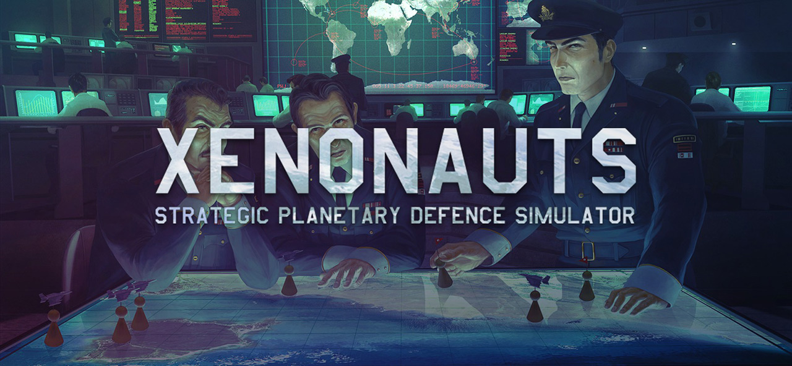

Retrospectiva săptămânii 17-23 iunie 2018
Retrospectiva săptămânii este rubrica duminicală în care trecem în revistă evenimentele săptămânii de pe frontul de gaming: știri şi articole (scrise de alții, bineînțeles, că e mai ușor aşa), industrie, lansări, oferte de jocuri, toate numai de savurat la cafeaua de duminică dimineața. (Și la care oricine poate contribui. 1 )
Ştiri
- The World Health Organization a anunțat includerea „gaming disorder” pe lista tulburărilor psihice în ediția 11 a International Classification of Diseases. Cum era de așteptat, industria jocurilor se opune cu vehemență acestei clasificări. (PC Gamer)
- Xenonauts 2 apelează la crowdfunding prin Kickstarter, dupa 3 ani de dezvoltare, ocazie cu care au lansat și un demo jucabil.
- Steam oferă acum posibilitatea de a vedea câți bani ai cheltuit pe jocuri de-a lungul timpului. Totalul se poate verifica foarte simplu accesând acest link.
- Diablo 1 a fost reverse engineered iar codul său sursă este acum disponibil pe GitHub.
- Microsoft renunță la planurile de dezvoltare VR pe Xbox (The Verge)
- 16 studiouri renunță la un presupus spyware inclus în jocurile lor, după scandalul făcut de fani. Câteva dintre jocurile „afectate” sunt The Elder Scrolls Online, Conan Exiles, Secret World Legends și Warhammer: Vermintide. (Kotaku)
- Escape from Monkey Island este acum disponibil pe GOG.
Articole (critică, dev, design)
- One Finger Death Punch is the Perfect Action Game (Kotaku)
- Four developers of scary games explain how to make scary games very scary indeed (RPS)
- Un articol cuprinzător despre arta din Another World - un cult classic franțuzesc
- Developers Say Twitch is Hurting Single-Player Games (IGN)
- 66% of console players still prefer physical games over digital (Gamasutra)
- Elijah Wood on Why He’s Making a Video Game (Variety)
- Why Warner Bros. keeps picking up new games and studios (Venture Beat)
- (Video) Procedurally generating history in Caves of Qud (Gamasutra)
- The Legend of Nintendo (Bloomberg)
- The Problems of Mobile Strategy Game Design (Gamasutra)
- ‘It can never be that simple’: Designing the quests of Cyberpunk 2077 (Gamasutra)
- Interview: What went into making Divinity: Original Sin 2’s definitive edition (Ars Technica)
Anunţuri şi lansări de jocuri
Anunţate
- Life is Strange 2 - primul episod va fi lansat pe 27 septembrie 2018.
- Valkyria Chronicles 4 are acum o dată de lansare (25 septembrie 2018) și este disponibil pentru preorders.
Oferte jocuri
Humble Bundle
Konami Sale. Sunt la reducere ultimele jocuri din seria Metal Gear Solid, Castlevania și Pro Evolution Soccer 2018.
Steam
A început Summer Sale. Pe lângă numeroasele oferte nu lipsește tradiționala activitate de comunitate. Anul ăsta avem un minigame cu extratereștri care oferă șansa de a câștiga unul din jocurile puse la bătaie (Apotheon, Legend of Grimrock 2, Botanicula și multe altele). Pentru reduceri avem câteva recomandări de pe forum: XING - The Land Beyond (11,99 €), Prey (14,99 €), Rumu (9,99 €), STASIS (5,59 €), Caves of Qud (8,99€), The Painscreek Killings (4,99 €) și Dragon’s Lair (4,99 €). Acesta din urmă este și una dintre nominalizările la Gaming Club. Dacă îl luați, împărtășiți-ne impresiile voastre pe threadul său.
gog.com
Este weekendul Daedalic pe GOG. Dacă n-ați profitat de ofertele din ultimele săptămâni, o puteți face acum.
Fanatical
Indie Legends 8 Bundle - doar €3.69 și merită pentru Fahrenheit, Convoy (Mad Max indie, pentru care avem și noi review pe site), Organ Trail, Train Valley (un puzzle drăguț cu trenulețe) și bineînțeles trilogia Broken Sword.
Altele
Summer Sale pe itch.io
Recomandarea săptămânii: Xenonauts

Xenonauts este probabil cea mai apropiată reconstituire de dată recentă a ceea ce a fost seria X-Com (a nu se confunda cu XCOM-urile moderne). În așteptarea sequelului proaspăt anunțat, vă recomandăm să puneți mâna pe el și să vă faceți încălzirea. Este oferit la reducere pe Steam, pentru doar 5,74 €.
- Dacă ai citit vreun articol sau vreo știre interesantă și crezi că merită inclusă în retrospectiva săptămânii, te așteptăm cu recomandarea ta pe forum, pe unul din topicurile dedicate: Știri, Articole, Gaming România, Oferte jocuri [return]